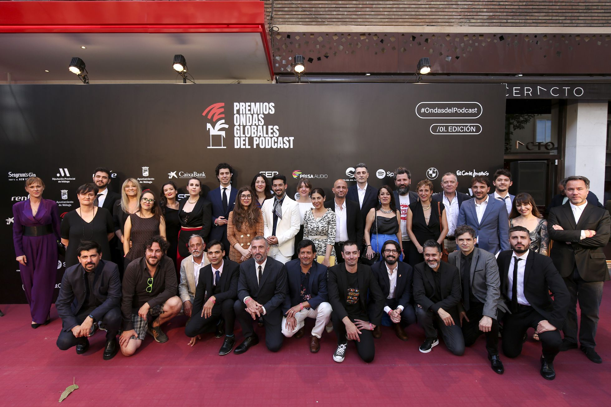

Podcasters, guionistas, productores, diseñadores sonoros y profesionales del mundo del audio ya pueden presentarse a la II edición de los Premios Ondas Globales del Podcast, unos galardones organizados por PRISA Audio y Cadena SER. Las candidaturas podrán ser presentadas hasta el 16 de diciembre de 2022. El jurado anunciará los nominados el próximo 31 de enero de 2023, y la gala de entrega de galardones se celebrará en mayo de ese mismo año.
Los Premios Ondas Globales del Podcast nacieron con el objetivo de dar visibilidad a la industria del podcast y reconocer la labor de sus profesionales, su creatividad e innovación. La pasada edición recibió 888 candidaturas de más de 15 países, un impacto que refleja la importancia de estos galardones.
A la II edición de los premios pueden optar los proyectos producidos o coproducidos en el ámbito nacional o internacional ―en español, en una de las lenguas cooficiales de España o en cualquier otra lengua―. Solo serán aceptados los trabajos publicados entre el 1 de octubre de 2021 y el 31 de octubre de 2022 ―en el caso de las series, al menos uno de los episodios debe encontrarse en esa horquilla temporal―, así como los profesionales con méritos acreditados en este mismo período.
El jurado estará formado por expertos del mundo del audio, la comunicación y la creatividad publicitaria, y concederá 15 galardones divididos en tres grupos: siete premios en la categoría General, seis en la categoría Específica y dos premios Especiales. Este último grupo no recibirá candidaturas ni tendrá nominados y será el propio jurado el que proponga por méritos los reconocimientos al podcast revelación y trayectoria y consolidación del podcast en España y Latinoamérica.
Las candidaturas pueden presentarse en la web podcast.premiosondas.com, donde también se pueden consultar las bases de la convocatoria, información detallada sobre los galardones y las condiciones de presentación de los proyectos.
La categoría General premiará el mejor podcast de ficción; el mejor podcast narrativo de no-ficción; el mejor podcast conversacional; el mejor branded-podcast; el mejor podcast experimental; el mejor podcast en lengua cooficial del Estado; y el mejor podcast internacional en lengua no española.
La categoría Específica otorgará sus galardones a la mejor producción; el mejor guion; el mejor episodio; el mejor diseño sonoro; el/la mejor actor o actriz; el/la mejor anfitrión o anfitriona.
El jurado reconocerá también a los profesionales de la industria con los premios Especiales, revelación y a la trayectoria en la industria y consolidación del Podcast en España y Latinoamérica
Los Premios Ondas Globales del Podcast, organizados por PRISA Audio y Cadena SER, se presentan ya como los grandes premios dedicados exclusivamente del sector en el mundo hispanohablante. Los galardones forman parte de los Premios Ondas de Radio Barcelona que, celebrados desde 1956, están considerados como los galardones de mayor prestigio de radio y televisión que se conceden en España.
PRISA Audio es una plataforma transversal que integra todos los contenidos de audio no lineal de la compañía (EL PAÍS, AS, Cadena SER, Cadena DIAL y LOS40) y las emisoras en Latinoamérica (W Radio, Caracol Radio y ADN Chile), además de Podium Podcast, entre otros. Actualmente, es el segundo mayor productor de contenidos de este tipo en el mundo, únicamente superado por el conglomerado estadounidense iHeart Media.